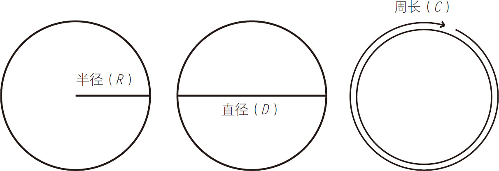
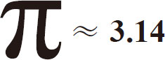
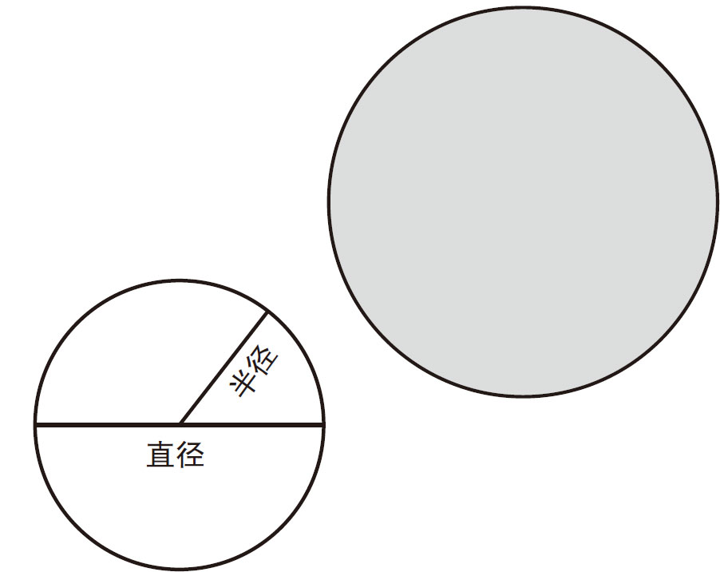
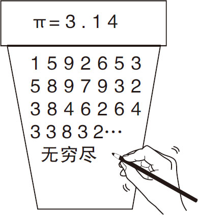
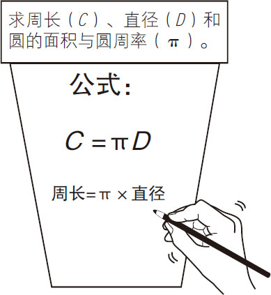
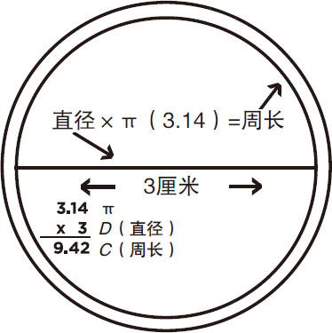

■圆的半径是从中心到边缘的直线距离。直径是以圆的一边为起点，穿过中心，到达圆的另一边的直线。
■周长是圆的边缘的长度。
■当你用周长除以直径时，你会得到3.141 5……这是圆周率的数值。


周长的计算公式：
周长＝圆周率×直径
或
C
＝2πR
或
C
＝πD
和朋友们一起制作π杯，这样就能更加了解圆的计算公式了。
需要准备的东西：
►塑料杯
►马克笔
制作
只需在杯子的一侧写上圆周率的符号和数值，如图3-11所示。

图3-11
在杯子的另一侧，写上圆周率的公式，如图3-12所示。

图3-12
在杯子的底部，测量它的直径并写出图3-13所示的信息，学会计算杯子的周长。

图3-13
π杯的底部